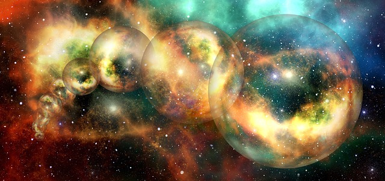
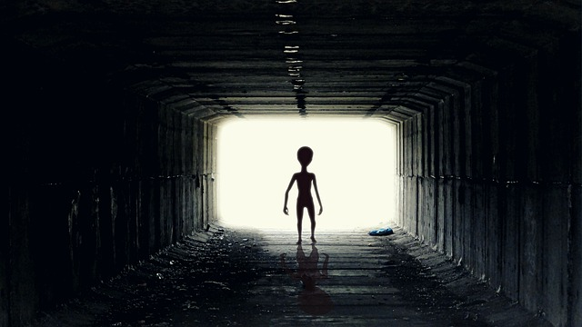

¿Pero como se creo el universo?
En el siguiente video te damos una breve explicacion de las teorias mas sorperndentes sobre como se creo el universo. Si te interesan mucho de estas cosas aqui abajo te dejamos un link hacia un canal de Youtube que habla de todas las noticias que salen mes a mes y de los descubrimientos mas interesantes que se han hecho.
Canal de YoutubeArticulos
Viajes en el tiempo
¿Existe el pasado? ¿Existe el futuro? ¿Si el pasado y el futuro existen, son modificables desde el presente? ¿Somos libres o nuestras acciones están determinadas?
LEER MAS...Multiverso
¿Es nuestro universo en su conjunto una pequeña isla contenida dentro de un meta-mundo infinitamente vasto y diversificado?
LEER MAS...Vida en otros planetas
Si hay una pregunta que trasciende su condición de mero enunciado interrogativo, es la de nuestra soledad en el Universo.
LEER MAS...